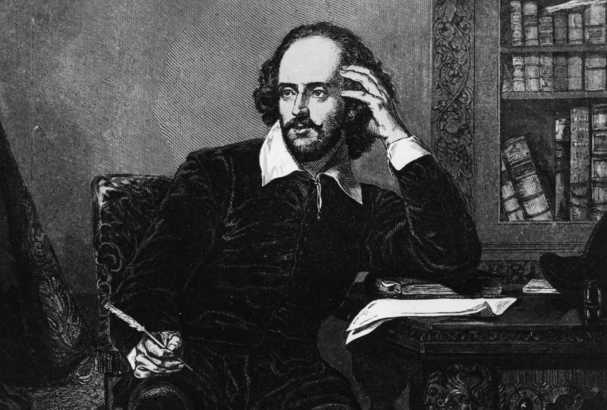

William Shakespeare
The world's greatest dramatist

Shakespeare is most likely to have received a classical Latin education at King's New School in Stratford
William Shakespeare (bapt. 26 April 1564 – 23 April 1616) was an English playwright, poet, and actor, widely regarded as the greatest writer in the English language and the world's greatest dramatist.
Here's a interesting things about William Shakespeare life:
- He is often called England's national poet and the "Bard of Avon" (or simply "the Bard").
- His extant works, including collaborations, consist of some 39 plays, 154 sonnets, two long narrative poems, and a few other verses, some of uncertain authorship.
- His plays have been translated into every major living language and are performed more often than those of any other playwright.
- They also continue to be studied and reinterpreted.